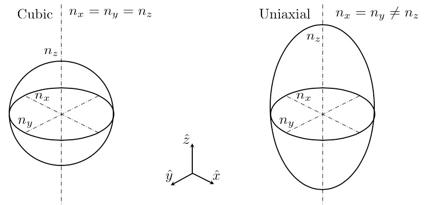

Optical properties in FERRET
This section requires some work before it will be finalized online. Please contact the developers if you need assistance with this aspect of the module.
In this section, we describe the postprocessing capability of FERRET to compute refractive indices for an arbitrary anisotropic medium. The medium can have internal structure (in the case of ferroelectrics) or can be nominally isotropic but under the influence of elastic or electric fields (i.e. elastoptics, electrooptics, or piezooptics).
The refractive index is defined by the quantity known as the indicatrix
in which with the permittivity of vacuum. In an isotropic medium, and therefore the indicatrix can be considered to be a perfect sphere in coordinate space. The quantities are reciprocal to the relative dielectric permeability or and where is the refective index tensor. Usually the off-diagonal elements are very small or zero. We can see an example of the cubic medium in Fig. \ref{fig_indicatrix}.

Figure 1: Left; Isotropic (cubic) medium. Right; Lower symmetry indicatrix characterized by a change of with respect to .
If the crystal symmetry is broken, then the indicatrix will also be modified thus losing the relationship as shown in the right panel of Fig. \ref{fig_indicatrix}. This can be due to a phase transition or an applied external field (i.e. electric or mechanical). Since there are many possible ways to change a crystal structure, we will only describe a few that make sense in the context of FERRET simulations. There are two assumptions to the phenomological theory prescribed to the topical properties of crystals and they are:
\begin{itemize} \item In a homogeneously deformed solid the effect of deformation is only to alter the parameters of the optical indicatrix. \item When strain is within elastic limits, the changes of an optical parameter (polarization constant) due to deformation can be expressed as a homogeneous linear function of the nine strain or stress components. \item The electromagnetic (EM) field is weak and does not induce secondary changes to the refractive index. \end{itemize}
Typically, this last assumption is usually what is applicable to experiments involving transmission or scattering. To lowest order, the relative change in the indicatrix components due to electric and mechanical fields are given by Nye (1985),
where and is the electrooptic and photoelastic tensors. Typical orders of magnitude and units of and are m/V and m/N respectively. The quantity is the elastic stress tensor component. The relative change of the indicatrix relationship can also be expressed in terms of strain ,
with is the elastic stiffness tensor. As an example, we can consider an applied uniaxial stress on a cubic crystal (\mathbf{E} = 0). Before the deformation,
with . After deformation, by using the above expressions for and a cubic symmetry for , we find (in Voight notation),
Note that if the crystal symmetry before deformation is cubic symmetry of , or , then and the resulting indicatrix relationship is as in Fig. \ref{fig_indicatrix}. However, if the cubic symmetry is or , then resulting in which has much consequence on an observed birefringence.
In principle any symmetry crystal can be investigated in FERRET simulations and that these expressions also work for inhomogeneously applied fields breaking the symmetry locally leading to spatially varying refractive indices.
Another example of possible postprocessing ability in FERRET is to compute the relative changes in the refractive index due to the ferroelectric phase transition. Similar to an applied stress which breaks the symmetry leading to birefringence, the onset of the electric polarization moment arising from a structural distortion of the ionic lattice also breaks the symmetry. In the case of canonical perovskite ferroelectric (FE) , the symmetry initially goes from cubic to tetragonal as the temperature is lowered below the Curie temperature . We consult the work of Bernasconi et al. (1995) for a description.
The spontaneous polarization enters into the relative changes to the indicatrix coefficients via,
where is the spontaneous strain arising from the phase transition. One can appreciate here that both the polarization and the elastic field adjust the refractive indices leading to a birefringence . The parameters are known as the polar-optic coefficients in units of . These materials constants have been shown to be strongly temperature dependent (as is for ) as well as dependent on the wavelength of light . Using room temperature values of and nm, we have due to the FE phase transition. For weak EM fields, and at frequencies of the visible spectrum, the FE polarization is expected to be fixed in time which is a significant approximation to be taken into consideration. We should also mention that the values of are not known for many FE materials but they should be able to be computed from first-principles methodology or measured carefully as in the case of in the cited work.
As the birefringence is one way to observe and measure the domain topology, we provide this feature in FERRET for users. By first using the phase field method to calculate the ground state structure (in arbitrary 3D geometries), the local refractive indices can then be computed within this approach. We aim to provide an example in our tutorials listed on this website (in construction) and we plan to expand this capability in the future to handle lower symmetries and other FE materials such as those displaying magnetic order (multiferroics).